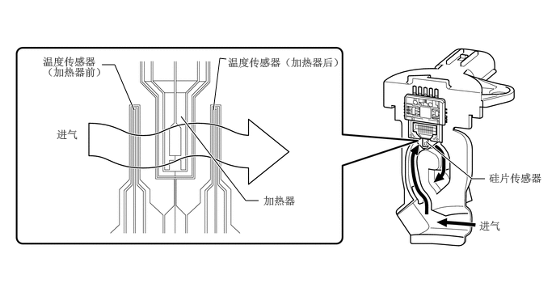

构造
该质量空气流量计分总成为插槽式，可以使部分进气流经检测区域。
该质量空气流量计分总成具有内置进气温度传感器。
进气气流经过旁通通道中的硅片传感器的温度传感器（加热器前）、加热器，然后经过温度传感器（加热器后）。由于进气接触到加热器时温度升高，因此进气温度在流经温度传感器（加热器后）时高于其流经温度传感器（加热器前）时的温度。各温度传感器的进气温差随流经硅片传感器的进气速率而变化。温度传感器桥接电路检测温差，且控制电路将其转化为脉冲信号并将其输出至 ECM。温度传感器（加热器前）检测的温度高于温度传感器（加热器后）检测的温度时，检测到进气回流。
ECM 根据接收自质量空气流量计分总成的脉冲信号计算进气量，并将其用于确定最佳空燃比所需的喷油持续时间。
加热器控制桥接电路具有温度传感器和功率晶体管，并将加热器温度保持在特定温度。

存储这些 DTC 中的任一个时，ECM 进入失效保护模式。失效保护模式期间，ECM 根据发动机转速和节气门开度计算喷油持续时间。失效保护模式持续运行直至检测到通过条件。有关详情，请参考修理手册。